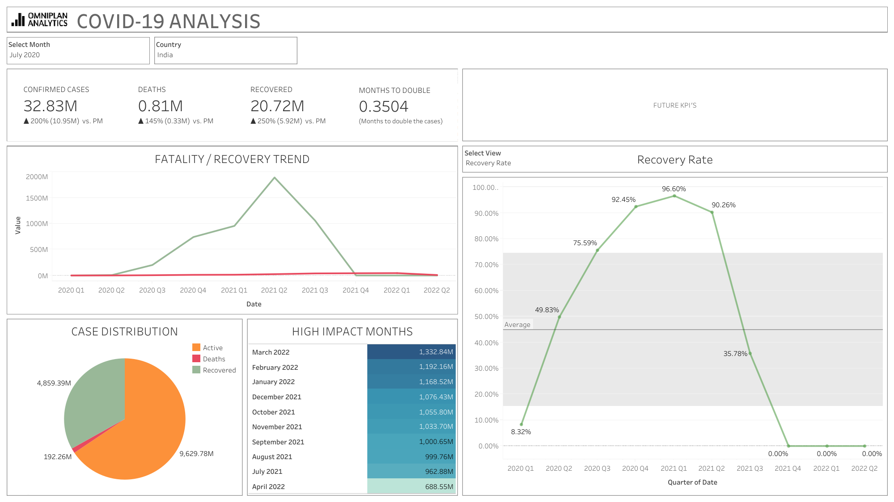

A productivity-focused web application that implements the Pomodoro Technique. Features customizable work/break intervals, notifications, and task tracking. Built with modern web technologies to help users maintain focus and manage their time effectively.
A comprehensive data visualization project using Tableau that analyzes the global impact of COVID-19. This interactive dashboard presents real-time statistics and trends of cases across different regions, helping users understand the pandemic's progression and impact worldwide. Features detailed geographical mapping, time-series analysis, and comparative statistics between countries.
